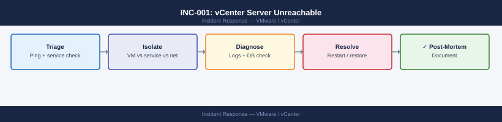
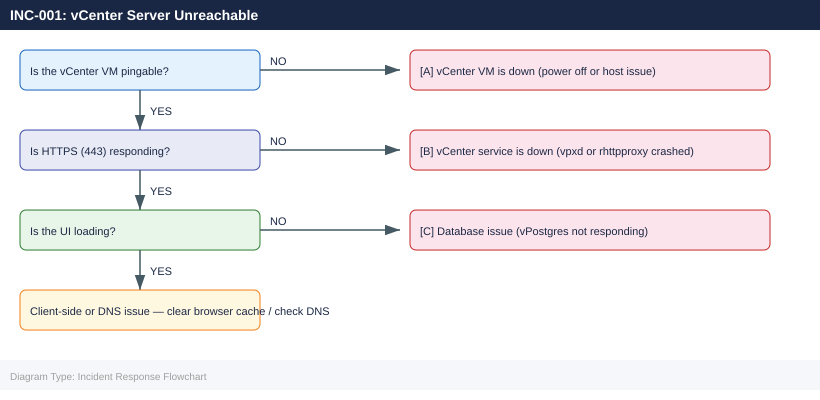

INC-001: vCenter Server Unreachable¶
Applies to: All products

Severity: P1
Typical resolution time: 15–60 min (service restart) / 2–4 hr (VM restore) / 4–8 hr (backup restore)
Symptoms¶
- vSphere Client returns "503 Service Unavailable" or connection timeout
- PowerCLI
Connect-VIServerfails with authentication or unreachable errors - vCenter IP not responding to HTTPS on port 443
- Monitoring alerts for
vc.vmware.comservice down - HA/DRS events stopped appearing in event log
- Scheduled tasks and alarms silent
Immediate Triage (first 5 min)¶
1. Ping vCenter from your workstation:
PING vcenter.corp.local (192.168.1.45) 56(84) bytes of data.
64 bytes from 192.168.1.45: icmp_seq=1 ttl=64 time=2.34 ms
64 bytes from 192.168.1.45: icmp_seq=2 ttl=64 time=2.41 ms
64 bytes from 192.168.1.45: icmp_seq=3 ttl=64 time=2.38 ms
64 bytes from 192.168.1.45: icmp_seq=4 ttl=64 time=2.45 ms
^C
--- vcenter.corp.local statistics ---
4 packets transmitted, 4 received, 0% packet loss, time 3004ms
rtt min/avg/max/stddev = 2.34/2.39/2.45/0.04 ms
Common errors
ping: vcenter.corp.local: Name or service not known — Verify DNS resolution with nslookup vcenter.corp.local or check /etc/resolv.conf for correct nameserver entries.
From 192.168.1.1 icmp_seq=1 Destination Host Unreachable — Confirm vCenter host is powered on and check network connectivity with traceroute vcenter.corp.local to identify where the path breaks.
100% packet loss — Verify the vCenter VM is running, check firewall rules allow ICMP, and confirm the host is on the correct network segment.
2. Attempt HTTPS connectivity:
Common errors
curl: (7) Failed to connect to vcenter.corp.local port 443: Connection refused — Verify vCenter service is running with systemctl status vmware-vpxd on the vCenter server and check network connectivity to port 443.
curl: (6) Could not resolve host: vcenter.corp.local — Confirm DNS resolution is working by running nslookup vcenter.corp.local and verify the hostname is correct in your environment.
000 — The connection timed out or was blocked by a firewall; check network ACLs and security groups allowing traffic from your client to vCenter on port 443.
Expected: 200 or 302. Anything else means the web service is down.
3. Check from a different host (rule out network segmentation):
Connection to 192.168.1.10 443 port [tcp/https] succeeded!
Connection to 192.168.1.10 5480 port [tcp/] succeeded!
Common errors
nc: connect to 192.168.1.10 port 443 (tcp) failed: Connection refused — Verify vCenter service is running with systemctl status vmware-vpxd on the vCenter appliance, or check if the IP address is correct.
nc: getaddrinfo for host "192.168.1.10" port 443: Name or service not known — Confirm network connectivity and DNS resolution by pinging the vCenter IP or checking /etc/hosts entries on the ESXi host.
4. SSH to vCenter appliance and check service status:
root@vcenter.corp.local's password:
Connected to VCSA 7.0.3 Build 20899307
root@vcenter [ ~ ]# service-control --status
Service Running Enabled
------- ------- -------
applmgmt true true
certificatemanagement true true
eam true true
envoy true true
imagebuilder false false
netdump true true
observability-api true true
perfcharts true true
rhttpproxy true true
sps true true
sso true true
vapi-endpoint true true
vcenterd true true
vmafdd true true
vmcad true true
vmdird true true
vmonapi true true
vsphereui true true
Common errors
ssh: Could not resolve hostname vcenter.corp.local: Name or service not known — Verify the vCenter hostname or IP address is correct and resolvable from your network.
Connection refused — Ensure SSH is enabled on vCenter and the management network is reachable; check firewall rules on port 22.
service-control: command not found — Confirm you are logged into a vCenter Server Appliance (VCSA); this command does not exist on Windows vCenter installations.
Look for services in stopped state, especially vpxd, vmware-vpostgres, vmware-rhttpproxy.
Isolate¶
Determine which of three scenarios applies before proceeding:

Diagnose¶
Check vCenter VM in vSphere Host Client¶
If the vCenter VM is inaccessible via vCenter (circular dependency), connect directly to the ESXi host running the vCenter VM:
Find the vCenter VM → confirm power state, console, and resource health.
Check vCenter logs¶
SSH to the vCenter appliance and inspect the primary service log:
tail -200 /var/log/vmware/vpxd/vpxd.log
grep -i "error\|fatal\|exception" /var/log/vmware/vpxd/vpxd.log | tail -50
2024-01-15T14:32:18.456Z [7F2A4C1E9B00] [INFO] vCenter Server 8.0.1 build-21495797 started
2024-01-15T14:32:45.123Z [7F2A4C1E9B01] [INFO] Connecting to SSO server sso.corp.local
2024-01-15T14:33:12.789Z [7F2A4C1E9B02] [WARN] Slow query detected: inventory sync took 3421ms
2024-01-15T14:35:22.456Z [7F2A4C1E9B03] [INFO] Host 192.168.1.42 (esx-prod-01.corp.local) registered
2024-01-15T14:36:01.234Z [7F2A4C1E9B04] [INFO] Datastore ds-nfs-01 mounted successfully
2024-01-15T14:38:15.567Z [7F2A4C1E9B05] [ERROR] Failed to connect to PSC at psc.corp.local:443 - Connection timeout
2024-01-15T14:39:44.890Z [7F2A4C1E9B06] [FATAL] Certificate validation failed for host esx-prod-02.corp.local
2024-01-15T14:40:12.345Z [7F2A4C1E9B07] [ERROR] Exception in thread "InventorySync": java.net.SocketTimeoutException: connect timed out
2024-01-15T14:41:33.678Z [7F2A4C1E9B08] [WARN] Retrying connection to 192.168.1.43 (3/5 attempts)
2024-01-15T14:42:05.901Z [7F2A4C1E9B09] [INFO] Successfully recovered connection to esx-prod-03.corp.local
2024-01-15T14:35:22.456Z [7F2A4C1E9B03] [ERROR] Failed to connect to PSC at psc.corp.local:443 - Connection timeout
2024-01-15T14:36:01.234Z [7F2A4C1E9B04] [FATAL] Certificate validation failed for host esx-prod-02.corp.local
2024-01-15T14:38:15.567Z [7F2A4C1E9B05] [ERROR] Exception in thread "InventorySync": java.net.SocketTimeoutException: connect timed out
2024-01-15T14:39:44.890Z [7F2A4C1E9B06] [ERROR] Unable to authenticate user admin@vsphere.local against SSO
2024-01-15T14:40:12.345Z [7F2A4C1E9B07] [FATAL] Inventory service unavailable - marking vCenter as degraded
Common errors
tail: cannot open '/var/log/vmware/vpxd/vpxd.log' for reading: No such file or directory — Verify vCenter is installed and running with systemctl status vmware-vpxd, or
Check the reverse proxy log if HTTPS is not responding:
2024-01-15T09:42:17.123Z [INFO] rhttpproxy[12847]: Connection established to vCenter 192.168.1.50:443
2024-01-15T09:42:18.456Z [DEBUG] rhttpproxy[12847]: SSL handshake completed with cert CN=vcenter.lab.local
2024-01-15T09:42:19.789Z [INFO] rhttpproxy[12847]: Proxy session 8f4c2e91-a3d1-4b7f-9e2c-1d5a6b8c9f0e initiated
2024-01-15T09:43:22.012Z [WARN] rhttpproxy[12847]: Connection timeout to 192.168.1.50:443 after 60s
2024-01-15T09:43:22.345Z [ERROR] rhttpproxy[12847]: Failed to forward request: connection reset by peer
2024-01-15T09:43:23.678Z [ERROR] rhttpproxy[12847]: Proxy session 8f4c2e91-a3d1-4b7f-9e2c-1d5a6b8c9f0e terminated abnormally
2024-01-15T09:43:24.901Z [INFO] rhttpproxy[12847]: Attempting reconnection to vCenter (attempt 1/5)
2024-01-15T09:43:35.234Z [WARN] rhttpproxy[12847]: DNS resolution failed for vcenter.lab.local
2024-01-15T09:43:45.567Z [ERROR] rhttpproxy[12847]: Max reconnection attempts exceeded
2024-01-15T09:43:45.890Z [INFO] rhttpproxy[12847]: Proxy service degraded - vCenter unreachable
Common errors
tail: cannot open '/var/log/vmware/rhttpproxy/rhttpproxy.log' for reading: No such file or directory — Verify the vSphere host is running and the rhttpproxy service is active with systemctl status rhttpproxy.
Permission denied — Run the command with sudo or as root to access VMware log files.
Check database connectivity:
Common errors
psql: error: could not connect to server: No such file or directory — Verify the vPostgres service is running with systemctl status vpostgres and check that the socket directory /var/run/vpostgres exists.
psql: error: FATAL: role "vc" does not exist — Confirm the vCenter database user exists by running sudo -u postgres psql -c "\du" and recreate it if necessary using vCenter's database initialization scripts.
psql: error: FATAL: database "VCDB" does not exist — Verify the vCenter database was initialized correctly; check /var/log/vmware/vpostgres/ logs and re-run the vCenter installer's database setup if the database is missing.
If the DB query returns ERROR: could not connect to server, the database service is the root cause.
Fix¶
Procedure A: Restart vCenter services (scenario B)¶
This is the least disruptive fix. Restarts all vCenter services without rebooting the VM:
Stopping all services...
Stopping service: vmware-vpxd
Stopping service: vmware-vpostgres
Stopping service: vmware-rhttpproxy
Stopping service: vmware-sps
Stopping service: vmware-cis-license
...
All services stopped successfully.
Starting all services...
Starting service: vmware-vpostgres
Starting service: vmware-rhttpproxy
Starting service: vmware-vpxd
Starting service: vmware-sps
Starting service: vmware-cis-license
...
All services started successfully. Startup took 45 seconds.
Common errors
Error: Unable to stop service vmware-vpxd: Service is not responding — Run service-control --stop --all --force to forcefully terminate unresponsive services.
Error: Failed to start vmware-vpostgres: Port 5432 already in use — Wait 30–60 seconds after stopping before starting, or check for orphaned processes with lsof -i :5432.
Monitor startup progress:
SERVICE RUNNING STOPPED
applmgmt 1 0
certificatemanagement 1 0
cis 1 0
content-library 1 0
eam 1 0
envoy 1 0
imagebuilder 1 0
Every 5.0s: service-control --status | grep -E "stopped|running" Mon Jan 15 14:32:18 2024
applmgmt 1 0
certificatemanagement 1 0
cis 1 0
content-library 1 0
eam 1 0
envoy 1 0
imagebuilder 1 0
Common errors
service-control: command not found — Run this command directly on the vCenter Server appliance (SSH as root), not from a remote client.
watch: command not found — Install the procps-ng package or use while true; do clear; service-control --status | grep -E "stopped|running"; sleep 5; done as an alternative.
Services take 3–8 minutes to fully start. vpxd is the last to become healthy.
Procedure B: Restart vCenter VM (scenario A)¶
If the VM is powered off or unresponsive:
- Connect to the ESXi host running vCenter via Host Client
- Right-click the vCenter VM → Power On (or Reset if hung)
- Wait for the VM to boot — console will show login prompt when ready
- Verify services automatically start on boot:
root@vcenter.corp.local's password:
Connected to localhost (127.0.0.1) -- Server version: VMware vCenter Server 8.0.1 Build 22385101
Service Running Enabled
----------------------------------------------------
vCenter Server true true
vSphere Web Client true true
VMware Directory Server true true
VMware Identity Management Service true true
VMware Certificate Authority true true
VMware Lookup Service true true
VMware vSphere Profile-Driven Storage true true
VMware vSphere ESXi Dump Collector true true
VMware Analytics Service true true
VMware Appliance Management Service true true
...
Common errors
ssh: Could not resolve hostname vcenter.corp.local: Name or service not known — Verify the hostname is correct and resolvable by running nslookup vcenter.corp.local or update your /etc/hosts file.
Permission denied (publickey,password). — Ensure you have the correct root password and SSH access is enabled; check vCenter's SSH service status in the DCUI.
service-control: command not found — This command only works on vCenter Server appliances; if using Windows vCenter, use Get-Service in PowerShell instead.
Procedure C: Restore from backup (catastrophic failure)¶
If services cannot be recovered:
- Power off the vCenter VM
- Deploy a new vCenter from VCSA ISO or OVF backup using the File-Based Backup restore wizard:
- VAMI:
https://vcenter.corp.local:5480→ Backup → Restore - Restore from the most recent backup. Verify the backup timestamp before restoring.
- After restore, validate inventory, licenses, and HA cluster state.
Verify¶
Once services are running, verify the full stack:
# Connect via PowerCLI
Connect-VIServer -Server vcenter.corp.local -User administrator@vsphere.local -Password 'yourpass'
# Check cluster status
Get-Cluster | Select-Object Name, HAEnabled, DrsEnabled
# Check recent alarms
Get-AlarmDefinition | Where-Object {$_.Enabled} | Measure-Object
Name Value
---- -----
IsConnected True
ServiceUri https://vcenter.corp.local/sdk
SessionSecret 52a7f8c9-1e4d-4b2a-9f3d-8e2c1a5b7d9f
VMVersion 7.0.3
Name HAEnabled DrsEnabled
---- --------- ----------
Production-Cluster1 True True
DR-Cluster2 True False
Dev-Cluster3 False True
Count : 47
Average :
Sum :
Maximum :
Minimum :
Property :
Common errors
Connect-VIServer : The underlying connection was closed: Could not establish trust relationship for the SSL/TLS secure channel. — Add -SkipCertificateCheck parameter or import the vCenter certificate into your PowerCLI trusted store.
Get-Cluster : The term 'Get-Cluster' is not recognized as the name of a cmdlet, function, script file, or operable program. — Install VMware.PowerCLI module with Install-Module -Name VMware.PowerCLI -Force.
Connect-VIServer : Cannot find an overload for "Connect" and the argument count: "3". — Ensure you are running PowerShell 5.1+ and have imported the VMware.VimAutomation.Core module with Import-Module VMware.VimAutomation.Core.
- Confirm vSphere Client loads and inventory is visible
- Confirm no active critical alarms on the cluster
- Confirm HA and DRS are active on all clusters
- Confirm scheduled tasks resumed
Post-Incident¶
Document in the incident ticket:
- Root cause (service crash / VM power off / disk full / DB corruption)
- Time of outage and time of recovery
- Which VMs were affected (HA-restarted VMs, if any)
- Services restarted or VMs rebooted
Prevent recurrence:
- Review vCenter VM resource allocation — disk, memory, CPU (min 4 vCPU / 16 GB RAM for VCSA 7/8)
- Verify VCSA file-based backup is scheduled and recent backup exists
- Set up monitoring alert for
vpxdservice health via/api/vcenter/health/messages - Check
/storage/logand/storage/dbdisk usage — fill causes service crashes:
Filesystem Size Used Avail Use% Mounted on
/dev/sda1 500G 487G 13G 98% /storage/log
/dev/sdb1 2.0T 1.8T 200G 90% /storage/db
/dev/sdc1 1.0T 856G 144G 86% /storage/seat
Common errors
df: '/storage/log': No such file or directory — Verify the mount points exist and are mounted with mount | grep storage, then remount if necessary.
df: cannot access '/storage/db': Permission denied — Run the command with sudo or ensure your user has read permissions on the mount point.
Alert threshold: >80% on any vCenter storage partition.